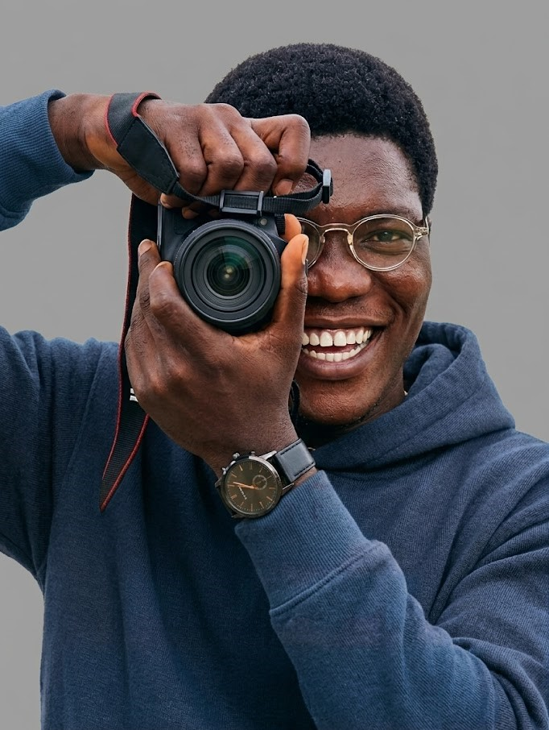

Behind the Lens
Creative director, visual storyteller, and emotional archivist. Based in Lagos, Nigeria with over a decade of capturing the world's most intimate and high-profile moments.

Photography isn't just my profession; it's how I connect with the world and bring people's unique stories to life. Since establishing Samstev Lensman in 2012, I've dedicated myself to understanding the nuances of human emotion, light, and timing.
With over 20,000 images delivered across weddings, concerts, state conferences, theatrical performances, and village outreaches — I don't just point a camera. I look for the split-second narrative in every frame.
Years Active
Based
Reach